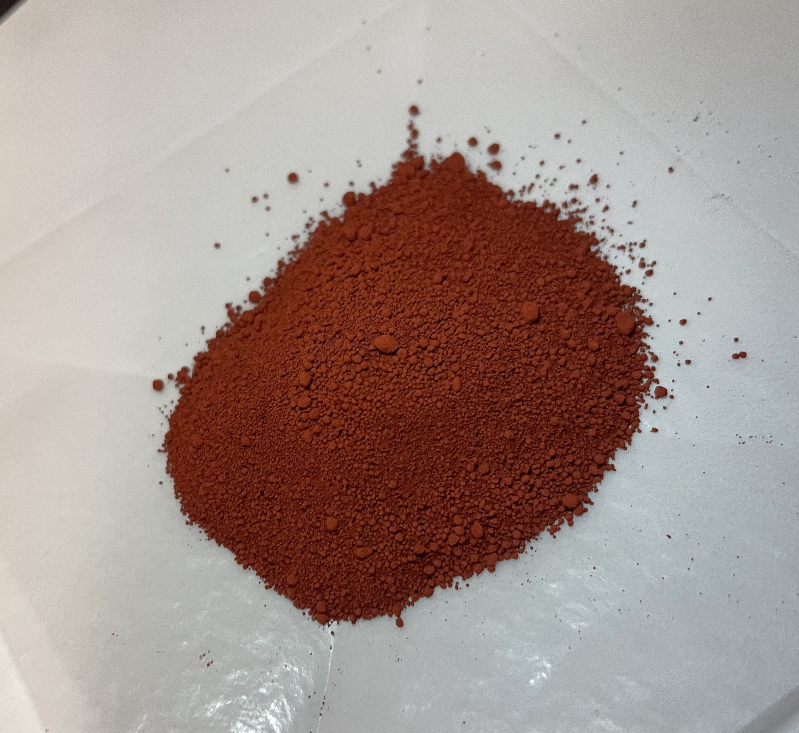

ベンガラ(弁柄)

人類と古くから付き合ってきた赤
概要
赤色の無機顔料です。無機顔料とは、鉱物など無機物を原料とした、水や油に溶けない粉末状の色材のことで、ベンガラはその代表格のひとつです。
耐候性(風雨や温度変化に強いこと)、耐光性(日光で色あせにくいこと)、耐久性(長く変質しにくいこと)に優れていて、害も少なく安全性が非常に高いため、古来より使われてきました。
名前の由来
かつて産地として有名だった、インド東部のベンガル地方が由来です。
ベンガラのお話
ベンガラは、土の中の鉄が酸化してできる酸化第二鉄(α-Fe₂O₃)を主成分とする無機顔料です。染料や化粧品の材料、はたまた研磨剤にまで使われてきました。日本で身近に触れられるベンガラといえば、神社の鳥居の赤色などでしょうか。ただ、その色は鮮やかな赤ではなく、写真にあるような暗い赤色です。
元々のベンガラは、先述の通り、赤鉄鉱(ヘマタイト)という鉱物として天然に産出します。この鉱物は世界各地に分布しているため、多くの場所で使われた顔料でした。有名な使用例では、フランス南西部のラスコーの洞窟壁画にもベンガラが使われているらしいです。さらに、約30万年前のホモ・エレクトスの遺跡からも発見されているそうで、人類にとても馴染み深い古代顔料なのです。
現在は、天然のものだけでなく合成ベンガラが作られていて、そちらが主流になっているそうです。工業的な製法には、乾式法、湿式法、アニリン法の3つが用いられています。詳しい合成のお話は、後ほど「記録」のほうに書こうと思います。
ちなみに、ベンガラは作る際の温度や混ぜ物によって、赤以外の色も出せるそうです。詳しい方法は、まだわかっていません。
結晶構造
ベンガラの主成分である酸化第二鉄(α-Fe₂O₃)は、結晶構造がコランダム型です。コランダムは酸化アルミニウム(Al₂O₃)からなる鉱物で、ルビーやサファイアはその宝石品種として知られています。ヘマタイトは、このコランダムと同じ構造をとる鉱物というわけです。
結晶構造は、下のリンクから3Dモデルで見られます。
※ モデルはコランダム(Al₂O₃)のものです。ヘマタイトも同じ構造なので、モデル中のアルミニウムを鉄に置き換えたものとして眺めてみてください。
身近なベンガラ、略して「身弁(ミジベン)」
ここで、日本で感じられる身近なベンガラ、略して「身弁(ミジベン)」をご紹介しましょう。
たとえば、首里城のあの赤色。あれも「久志間切弁柄(くしまぎりべんがら)」という、沖縄のベンガラです。皆さんがよく行くであろう、そこら辺にある古墳や神社などにも、ベンガラは顔料として利用されています。
今後のこと
後ほど、ベンガラ顔料のボトルを販売することも考えています。詳しいことが決まったら、あらためてお知らせします。